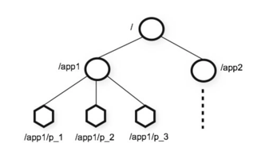

Zookeeper¶
1)初识 Zookeeper¶
1.1)Zookeeper概念¶
•Zookeeper 是 Apache Hadoop 项目下的一个子项目，是一个树形目录服务。
•Zookeeper 翻译过来就是 动物园管理员，他是用来管 Hadoop（大象）、Hive(蜜蜂)、Pig(小 猪)的管理员。简称zk
•Zookeeper 是一个分布式的、开源的分布式应用程序的协调服务。
•Zookeeper 提供的主要功能包括：
•配置管理
•分布式锁
•集群管理


2)ZooKeeper 安装与配置¶
2.1) 下载安装¶
2.1.1、环境准备¶
ZooKeeper服务器是用Java创建的，它运行在JVM之上。需要安装JDK 7或更高版本。
2.1.2、上传¶
将下载的ZooKeeper放到/opt/ZooKeeper目录下
#上传zookeeper alt+p
put f:/setup/apache-zookeeper-3.5.6-bin.tar.gz
#打开 opt目录
cd /opt
#创建zooKeeper目录
mkdir zooKeeper
#将zookeeper安装包移动到 /opt/zooKeeper
mv apache-zookeeper-3.5.6-bin.tar.gz /opt/zookeeper/
2.1.3、解压¶
将tar包解压到/opt/zookeeper目录下
tar -zxvf apache-ZooKeeper-3.5.6-bin.tar.gz
2.2) 配置启动¶
2.2.1、配置zoo.cfg¶
进入到conf目录拷贝一个zoo_sample.cfg并完成配置
#进入到conf目录
cd /opt/zooKeeper/apache-zooKeeper-3.5.6-bin/conf/
#拷贝
cp zoo_sample.cfg zoo.cfg
修改zoo.cfg
#打开目录
cd /opt/zooKeeper/
#创建zooKeeper存储目录
mkdir zkdata
#修改zoo.cfg
vim /opt/zooKeeper/apache-zooKeeper-3.5.6-bin/conf/zoo.cfg

修改存储目录：dataDir=/opt/zookeeper/zkdata
2.2.2、启动ZooKeeper¶
cd /opt/zooKeeper/apache-zooKeeper-3.5.6-bin/bin/
#启动
./zkServer.sh start

看到上图表示ZooKeeper成功启动
3、查看ZooKeeper状态
./zkServer.sh status
zookeeper启动成功。standalone代表zk没有搭建集群，现在是单节点

zookeeper没有启动

¶
3)ZooKeeper 命令操作¶
3.1)Zookeeper命令操作数据模型¶
•ZooKeeper 是一个树形目录服务,其数据模型和Unix的文件系统目录树很类似，拥有一个层次化结构。
•这里面的每一个节点都被称为： ZNode，每个节点上都会保存自己的数据和节点信息。
• 节点可以拥有子节点，同时也允许少量（1MB）数据存储在该节点之下。
•节点可以分为四大类：
•PERSISTENT 持久化节点
•EPHEMERAL 临时节点 ：-e
•PERSISTENT_SEQUENTIAL 持久化顺序节点 ：-s
•EPHEMERAL_SEQUENTIAL 临时顺序节点 ：-es


3.2)Zookeeper命令操作服务端命令¶
•启动 ZooKeeper 服务: ./zkServer.sh start
•查看 ZooKeeper 服务状态: ./zkServer.sh status
•停止 ZooKeeper 服务: ./zkServer.sh stop
•重启 ZooKeeper 服务: ./zkServer.sh restart

3.3)Zookeeper客户端常用命令¶
连接ZooKeeper服务端
./zkCli.sh –server ip:port
断开连接
quit
查看命令帮助
help
显示指定目录下节点
ls 目录
创建节点
create /节点path value
获取节点值
get /节点path
设置节点值
set /节点path value
删除单个节点
delete /节点path
删除带有子节点的节点
deleteall /节点path


3.4)客户端命令-创建临时有序节点¶
•创建临时节点
create -e /节点path value
•创建顺序节点
create -s /节点path value
•查询节点详细信息
ls –s /节点path
•czxid：节点被创建的事务ID
•ctime: 创建时间
•mzxid: 最后一次被更新的事务ID
•mtime: 修改时间
•pzxid：子节点列表最后一次被更新的事务ID
•cversion：子节点的版本号
•dataversion：数据版本号
•aclversion：权限版本号
•ephemeralOwner：用于临时节点，代表临时节点的事务ID，如果为持久节点则为0
•dataLength：节点存储的数据的长度
•numChildren：当前节点的子节点个数

4)ZooKeeper JavaAPI 操作¶
4.1)urator介绍¶
•Curator 是 Apache ZooKeeper 的Java客户端库。
•常见的ZooKeeper Java API ：
•原生Java API
•ZkClient
•Curator
•Curator 项目的目标是简化 ZooKeeper 客户端的使用。
•Curator 最初是 Netfix 研发的,后来捐献了 Apache 基金会,目前是 Apache 的顶级项目。
•官网：http://curator.apache.org/
4.2)JavaAPI操作建立连接¶
1，搭建项目
创建项目curator-zk
引入pom和日志文件
资料文件夹下pom.xml和log4j.properties

2、创建测试类，使用curator连接zookeeper
@Before
public void testConnect() {
//重试策略
RetryPolicy retryPolicy = new ExponentialBackoffRetry(3000, 10);
//2.第二种方式
//CuratorFrameworkFactory.builder();
client = CuratorFrameworkFactory.builder()
.connectString("192.168.200.130:2181")
.sessionTimeoutMs(60 * 1000)
.connectionTimeoutMs(15 * 1000)
.retryPolicy(retryPolicy)
.namespace("itheima")
.build();
//开启连接
client.start();
}
4.3)Zookeeper JavaAPI操作-创建节点¶
/**
* 创建节点：create 持久 临时 顺序 数据
* 1. 基本创建 ：create().forPath("")
* 2. 创建节点 带有数据:create().forPath("",data)
* 3. 设置节点的类型：create().withMode().forPath("",data)
* 4. 创建多级节点 /app1/p1 ：create().creatingParentsIfNeeded().forPath("",data)
*/
@Test
public void testCreate() throws Exception {
//2. 创建节点 带有数据
//如果创建节点，没有指定数据，则默认将当前客户端的ip作为数据存储
String path = client.create().forPath("/app2", "hehe".getBytes());
System.out.println(path);
}
@Test
public void testCreate2() throws Exception {
//1. 基本创建
//如果创建节点，没有指定数据，则默认将当前客户端的ip作为数据存储
String path = client.create().forPath("/app1");
System.out.println(path);
}
@Test
public void testCreate3() throws Exception {
//3. 设置节点的类型
//默认类型：持久化
String path = client.create().withMode(CreateMode.EPHEMERAL).forPath("/app3");
System.out.println(path);
}
@Test
public void testCreate4() throws Exception {
//4. 创建多级节点 /app1/p1
//creatingParentsIfNeeded():如果父节点不存在，则创建父节点
String path = client.create().creatingParentsIfNeeded().forPath("/app4/p1");
System.out.println(path);
}
4.4)ZookeeperJavaAPI操作-查询节点¶
/**
* 查询节点：
* 1. 查询数据：get: getData().forPath()
* 2. 查询子节点： ls: getChildren().forPath()
* 3. 查询节点状态信息：ls -s:getData().storingStatIn(状态对象).forPath()
*/
@Test
public void testGet1() throws Exception {
//1. 查询数据：get
byte[] data = client.getData().forPath("/app1");
System.out.println(new String(data));
}
@Test
public void testGet2() throws Exception {
// 2. 查询子节点： ls
List<String> path = client.getChildren().forPath("/");
System.out.println(path);
}
@Test
public void testGet3() throws Exception {
Stat status = new Stat();
System.out.println(status);
//3. 查询节点状态信息：ls -s
client.getData().storingStatIn(status).forPath("/app1");
System.out.println(status);
}
4.5)Zookeeper JavaAPI操作-修改节点¶
/**
* 修改数据
* 1. 基本修改数据：setData().forPath()
* 2. 根据版本修改: setData().withVersion().forPath()
* * version 是通过查询出来的。目的就是为了让其他客户端或者线程不干扰我。
*
* @throws Exception
*/
@Test
public void testSet() throws Exception {
client.setData().forPath("/app1", "itcast".getBytes());
}
@Test
public void testSetForVersion() throws Exception {
Stat status = new Stat();
//3. 查询节点状态信息：ls -s
client.getData().storingStatIn(status).forPath("/app1");
int version = status.getVersion();//查询出来的 3
System.out.println(version);
client.setData().withVersion(version).forPath("/app1", "hehe".getBytes());
}
4.6)Zookeeper JavaAPI操作-删除节点¶
/**
* 删除节点： delete deleteall
* 1. 删除单个节点:delete().forPath("/app1");
* 2. 删除带有子节点的节点:delete().deletingChildrenIfNeeded().forPath("/app1");
* 3. 必须成功的删除:为了防止网络抖动。本质就是重试。 client.delete().guaranteed().forPath("/app2");
* 4. 回调：inBackground
* @throws Exception
*/
@Test
public void testDelete() throws Exception {
// 1. 删除单个节点
client.delete().forPath("/app1");
}
@Test
public void testDelete2() throws Exception {
//2. 删除带有子节点的节点
client.delete().deletingChildrenIfNeeded().forPath("/app4");
}
@Test
public void testDelete3() throws Exception {
//3. 必须成功的删除
client.delete().guaranteed().forPath("/app2");
}
@Test
public void testDelete4() throws Exception {
//4. 回调
client.delete().guaranteed().inBackground(new BackgroundCallback(){
@Override
public void processResult(CuratorFramework client, CuratorEvent event) throws Exception {
System.out.println("我被删除了~");
System.out.println(event);
}
}).forPath("/app1");
}
4.7)Zookeeper JavaAPI操作-Watch监听概述¶
•ZooKeeper 允许用户在指定节点上注册一些Watcher，并且在一些特定事件触发的时候，ZooKeeper 服务端会将事件通知到感兴趣的客户端上去，该机制是 ZooKeeper 实现分布式协调服务的重要特性。
•ZooKeeper 中引入了Watcher机制来实现了发布/订阅功能能，能够让多个订阅者同时监听某一个对象，当一个对象自身状态变化时，会通知所有订阅者。
•ZooKeeper 原生支持通过注册Watcher来进行事件监听，但是其使用并不是特别方便
需要开发人员自己反复注册Watcher，比较繁琐。
•Curator引入了 Cache 来实现对 ZooKeeper 服务端事件的监听。
•ZooKeeper提供了三种Watcher：
•NodeCache : 只是监听某一个特定的节点
•PathChildrenCache : 监控一个ZNode的子节点.
•TreeCache : 可以监控整个树上的所有节点，类似于PathChildrenCache和NodeCache的组合

4.8Zookeeper JavaAPI操作-Watch监听-NodeCache¶
/**
* 演示 NodeCache：给指定一个节点注册监听器
*/
@Test
public void testNodeCache() throws Exception {
//1. 创建NodeCache对象
final NodeCache nodeCache = new NodeCache(client,"/app1");
//2. 注册监听
nodeCache.getListenable().addListener(new NodeCacheListener() {
@Override
public void nodeChanged() throws Exception {
System.out.println("节点变化了~");
//获取修改节点后的数据
byte[] data = nodeCache.getCurrentData().getData();
System.out.println(new String(data));
}
});
//3. 开启监听.如果设置为true，则开启监听是，加载缓冲数据
nodeCache.start(true);
while (true){
}
}
4.9)Zookeeper JavaAPI操作-Watch监听-PathChildrenCache¶
@Test
public void testPathChildrenCache() throws Exception {
//1.创建监听对象
PathChildrenCache pathChildrenCache = new PathChildrenCache(client,"/app2",true);
//2. 绑定监听器
pathChildrenCache.getListenable().addListener(new PathChildrenCacheListener() { @Override
public void childEvent(CuratorFramework client, PathChildrenCacheEvent event) throws Exception {
System.out.println("子节点变化了~");
System.out.println(event);
//监听子节点的数据变更，并且拿到变更后的数据
//1.获取类型
PathChildrenCacheEvent.Type type = event.getType();
//2.判断类型是否是update
if(type.equals(PathChildrenCacheEvent.Type.CHILD_UPDATED)){
System.out.println("数据变了！！！");
byte[] data = event.getData().getData();
System.out.println(new String(data));
}
}
});
//3. 开启
pathChildrenCache.start();
while (true){
}
}
4.10)Zookeeper JavaAPI操作-Watch监听-TreeCache¶
/**
* 演示 TreeCache：监听某个节点自己和所有子节点们
*/
@Test
public void testTreeCache() throws Exception {
//1. 创建监听器
TreeCache treeCache = new TreeCache(client,"/app2");
//2. 注册监听
treeCache.getListenable().addListener(new TreeCacheListener() {
@Override
public void childEvent(CuratorFramework client, TreeCacheEvent event) throws Exception {
System.out.println("节点变化了");
System.out.println(event);
}
});
//3. 开启
treeCache.start();
while (true){
}
}
4.11)Zookeeper分布式锁-概念¶
•在我们进行单机应用开发，涉及并发同步的时候，我们往往采用synchronized或者Lock的方式来解决多线程间的代码同步问题，这时多线程的运行都是在同一个JVM之下，没有任何问题。
•但当我们的应用是分布式集群工作的情况下，属于多JVM下的工作环境，跨JVM之间已经无法通过多线程的锁解决同步问题。
•那么就需要一种更加高级的锁机制，来处理种跨机器的进程之间的数据同步问题——这就是分布式锁。

4.12)Zookeeper 分布式锁-zookeeper分布式锁原理¶
•核心思想：当客户端要获取锁，则创建节点，使用完锁，则删除该节点。
1.客户端获取锁时，在lock节点下创建临时顺序节点。
2.然后获取lock下面的所有子节点，客户端获取到所有的子节点之后，如果发现自己创建的子节点序号最小，那么就认为该客户端获取到了锁。使用完锁后，将该节点删除。
3.如果发现自己创建的节点并非lock所有子节点中最小的，说明自己还没有获取到锁，此时客户端需要找到比自己小的那个节点，同时对其注册事件监听器，监听删除事件。
4.如果发现比自己小的那个节点被删除，则客户端的
Watcher会收到相应通知，此时再次判断自己创建的节点
是否是lock子节点中序号最小的，如果是则获取到了锁，
如果不是则重复以上步骤继续获取到比自己小的一个节点
并注册监听。

4.13)Zookeeper 分布式锁-模拟12306售票案例¶
Curator实现分布式锁API
-
在Curator中有五种锁方案：
-
InterProcessSemaphoreMutex：分布式排它锁（非可重入锁）
-
InterProcessMutex：分布式可重入排它锁
-
InterProcessReadWriteLock：分布式读写锁
-
InterProcessMultiLock：将多个锁作为单个实体管理的容器
-
InterProcessSemaphoreV2：共享信号量

1,创建线程进行加锁设置
public class Ticket12306 implements Runnable{
private int tickets = 10;//数据库的票数
private InterProcessMutex lock ;
@Override
public void run() {
while(true){
//获取锁
try {
lock.acquire(3, TimeUnit.SECONDS);
if(tickets > 0){
System.out.println(Thread.currentThread()+":"+tickets);
Thread.sleep(100);
tickets--;
}
} catch (Exception e) {
e.printStackTrace();
}finally {
//释放锁
try {
lock.release();
} catch (Exception e) {
e.printStackTrace();
}
}
}
}
}
2,创建连接，并且初始化锁
public Ticket12306(){
//重试策略
RetryPolicy retryPolicy = new ExponentialBackoffRetry(3000, 10);
//2.第二种方式
//CuratorFrameworkFactory.builder();
CuratorFramework client = CuratorFrameworkFactory.builder()
.connectString("192.168.149.135:2181")
.sessionTimeoutMs(60 * 1000)
.connectionTimeoutMs(15 * 1000)
.retryPolicy(retryPolicy)
.build();
//开启连接
client.start();
lock = new InterProcessMutex(client,"/lock");
}
3,运行多个线程进行测试
public class LockTest {
public static void main(String[] args) {
Ticket12306 ticket12306 = new Ticket12306();
//创建客户端
Thread t1 = new Thread(ticket12306,"携程");
Thread t2 = new Thread(ticket12306,"飞猪");
t1.start();
t2.start();
}
}
5)ZooKeeper 集群搭建¶
5.1)Zookeeper集群介绍¶
Leader选举：
•Serverid：服务器ID
比如有三台服务器，编号分别是1,2,3。
编号越大在选择算法中的权重越大。
•Zxid：数据ID
服务器中存放的最大数据ID.值越大说明数据 越新，在选举算法中数据越新权重越大。
•在Leader选举的过程中，如果某台ZooKeeper
获得了超过半数的选票，
则此ZooKeeper就可以成为Leader了。
5.2)搭建要求¶
真实的集群是需要部署在不同的服务器上的，但是在我们测试时同时启动很多个虚拟机内存会吃不消，所以我们通常会搭建伪集群，也就是把所有的服务都搭建在一台虚拟机上，用端口进行区分。
我们这里要求搭建一个三个节点的Zookeeper集群（伪集群）。
5.3)准备工作¶
重新部署一台虚拟机作为我们搭建集群的测试服务器。
（1）安装JDK 【此步骤省略】。
（2）Zookeeper压缩包上传到服务器 （3）将Zookeeper解压 ，建立/usr/local/zookeeper-cluster目录，将解压后的Zookeeper复制到以下三个目录
/usr/local/zookeeper-cluster/zookeeper-1
/usr/local/zookeeper-cluster/zookeeper-2
/usr/local/zookeeper-cluster/zookeeper-3
[root@localhost ~]# mkdir /usr/local/zookeeper-cluster
[root@localhost ~]# cp -r apache-zookeeper-3.5.6-bin /usr/local/zookeeper-cluster/zookeeper-1
[root@localhost ~]# cp -r apache-zookeeper-3.5.6-bin /usr/local/zookeeper-cluster/zookeeper-2
[root@localhost ~]# cp -r apache-zookeeper-3.5.6-bin /usr/local/zookeeper-cluster/zookeeper-3
（4）创建data目录 ，并且将 conf下zoo_sample.cfg 文件改名为 zoo.cfg
mkdir /usr/local/zookeeper-cluster/zookeeper-1/data
mkdir /usr/local/zookeeper-cluster/zookeeper-2/data
mkdir /usr/local/zookeeper-cluster/zookeeper-3/data
mv /usr/local/zookeeper-cluster/zookeeper-1/conf/zoo_sample.cfg /usr/local/zookeeper-cluster/zookeeper-1/conf/zoo.cfg
mv /usr/local/zookeeper-cluster/zookeeper-2/conf/zoo_sample.cfg /usr/local/zookeeper-cluster/zookeeper-2/conf/zoo.cfg
mv /usr/local/zookeeper-cluster/zookeeper-3/conf/zoo_sample.cfg /usr/local/zookeeper-cluster/zookeeper-3/conf/zoo.cfg
（5） 配置每一个Zookeeper 的dataDir 和 clientPort 分别为2181 2182 2183
修改/usr/local/zookeeper-cluster/zookeeper-1/conf/zoo.cfg
vim /usr/local/zookeeper-cluster/zookeeper-1/conf/zoo.cfg
clientPort=2181
dataDir=/usr/local/zookeeper-cluster/zookeeper-1/data
修改/usr/local/zookeeper-cluster/zookeeper-2/conf/zoo.cfg
vim /usr/local/zookeeper-cluster/zookeeper-2/conf/zoo.cfg
clientPort=2182
dataDir=/usr/local/zookeeper-cluster/zookeeper-2/data
修改/usr/local/zookeeper-cluster/zookeeper-3/conf/zoo.cfg
vim /usr/local/zookeeper-cluster/zookeeper-3/conf/zoo.cfg
clientPort=2183
dataDir=/usr/local/zookeeper-cluster/zookeeper-3/data
5.4)配置集群¶
（1）在每个zookeeper的 data 目录下创建一个 myid 文件，内容分别是1、2、3 。这个文件就是记录每个服务器的ID
echo 1 >/usr/local/zookeeper-cluster/zookeeper-1/data/myid
echo 2 >/usr/local/zookeeper-cluster/zookeeper-2/data/myid
echo 3 >/usr/local/zookeeper-cluster/zookeeper-3/data/myid
（2）在每一个zookeeper 的 zoo.cfg配置客户端访问端口（clientPort）和集群服务器IP列表。
集群服务器IP列表如下
vim /usr/local/zookeeper-cluster/zookeeper-1/conf/zoo.cfg
vim /usr/local/zookeeper-cluster/zookeeper-2/conf/zoo.cfg
vim /usr/local/zookeeper-cluster/zookeeper-3/conf/zoo.cfg
server.1=192.168.149.135:2881:3881
server.2=192.168.149.135:2882:3882
server.3=192.168.149.135:2883:3883
解释：server.服务器ID=服务器IP地址：服务器之间通信端口：服务器之间投票选举端口
5.5)启动集群¶
启动集群就是分别启动每个实例。
/usr/local/zookeeper-cluster/zookeeper-1/bin/zkServer.sh start
/usr/local/zookeeper-cluster/zookeeper-2/bin/zkServer.sh start
/usr/local/zookeeper-cluster/zookeeper-3/bin/zkServer.sh start

启动后我们查询一下每个实例的运行状态
/usr/local/zookeeper-cluster/zookeeper-1/bin/zkServer.sh status
/usr/local/zookeeper-cluster/zookeeper-2/bin/zkServer.sh status
/usr/local/zookeeper-cluster/zookeeper-3/bin/zkServer.sh status
先查询第一个服务

Mode为follower表示是跟随者（从）
再查询第二个服务Mod 为leader表示是领导者（主）

查询第三个为跟随者（从）

5.6)模拟集群异常¶
（1）首先我们先测试如果是从服务器挂掉，会怎么样
把3号服务器停掉，观察1号和2号，发现状态并没有变化
/usr/local/zookeeper-cluster/zookeeper-3/bin/zkServer.sh stop
/usr/local/zookeeper-cluster/zookeeper-1/bin/zkServer.sh status
/usr/local/zookeeper-cluster/zookeeper-2/bin/zkServer.sh status

由此得出结论，3个节点的集群，从服务器挂掉，集群正常
（2）我们再把1号服务器（从服务器）也停掉，查看2号（主服务器）的状态，发现已经停止运行了。
/usr/local/zookeeper-cluster/zookeeper-1/bin/zkServer.sh stop
/usr/local/zookeeper-cluster/zookeeper-2/bin/zkServer.sh status

由此得出结论，3个节点的集群，2个从服务器都挂掉，主服务器也无法运行。因为可运行的机器没有超过集群总数量的半数。
（3）我们再次把1号服务器启动起来，发现2号服务器又开始正常工作了。而且依然是领导者。
/usr/local/zookeeper-cluster/zookeeper-1/bin/zkServer.sh start
/usr/local/zookeeper-cluster/zookeeper-2/bin/zkServer.sh status

（4）我们把3号服务器也启动起来，把2号服务器停掉,停掉后观察1号和3号的状态。
/usr/local/zookeeper-cluster/zookeeper-3/bin/zkServer.sh start
/usr/local/zookeeper-cluster/zookeeper-2/bin/zkServer.sh stop
/usr/local/zookeeper-cluster/zookeeper-1/bin/zkServer.sh status
/usr/local/zookeeper-cluster/zookeeper-3/bin/zkServer.sh status

发现新的leader产生了~
由此我们得出结论，当集群中的主服务器挂了，集群中的其他服务器会自动进行选举状态，然后产生新得leader
（5）我们再次测试，当我们把2号服务器重新启动起来启动后，会发生什么？2号服务器会再次成为新的领导吗？我们看结果
/usr/local/zookeeper-cluster/zookeeper-2/bin/zkServer.sh start
/usr/local/zookeeper-cluster/zookeeper-2/bin/zkServer.sh status
/usr/local/zookeeper-cluster/zookeeper-3/bin/zkServer.sh status


我们会发现，2号服务器启动后依然是跟随者（从服务器），3号服务器依然是领导者（主服务器），没有撼动3号服务器的领导地位。
由此我们得出结论，当领导者产生后，再次有新服务器加入集群，不会影响到现任领导者。
6)Zookeeper 核心理论¶
Zookeepe集群角色
在ZooKeeper集群服中务中有三个角色：
•Leader 领导者 ：
1. 处理事务请求
2. 集群内部各服务器的调度者
•Follower 跟随者 ：
1. 处理客户端非事务请求，转发事务请求给Leader服务器
2. 参与Leader选举投票
•Observer 观察者：
1. 处理客户端非事务请求，转发事务请求给Leader服务器